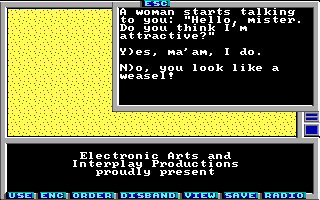

Game Tutorial Step 7: Creating dialogues
With action class 8 you can create interactions with NPCs or computer terminals or the button panel of a lift or what ever. In this example we will add a woman which will ask you if she's attractive or not. And your answer will affect how the woman reacts to you when you visit her again.
Here is the code:
<actions actionClass="8">
<dialogue id="0" menu="true" message="8">
<answer message="9" newActionClass="1" newAction="1" />
<answer message="10" newActionClass="1" newAction="2" />
</dialogue>
</actions>
It does the following: When you step on the square you have connected to this action then the conversation starts with the message string 8. The conversation is menu based. This means you select the answer by typing a single character instead of a whole word. The two answer elements defines the possible answers. The message attributes references string messages which define the key to press and newActionClass and newAction defines how the square is modified when this answer is selected.
The dialogue tag can have some more attributes: If you want to change the square to a special action class and action if the user aborts the conversation with the Escape key then you can use the cancelNewActionClass and cancelNewAction attributes. The same you can do when the user answers with an unknown answer (otherNewActionClass and otherNewAction).
Because the above code changes the square to two different print actions we have to define these print actions, too. Here they are. Put them into the action container for action class 1:
<print id="1"> <message>6</message> </print> <print id="2"> <message>7</message> </print>
And here are the new strings:
<string id="6">\rHello, sweety! How are you?\r</string> <string id="7">\rLeave me alone, filthy Ranger!\r</string> <string id="8">A woman starts talking to you: "Hello, mister. Do you think I'm attractive?"\r\rY)es, ma'am, I do.\r\rN)o, you look like a weasel!\r</string> <string id="9">Y</string> <string id="10">N</string>
You can download the current state of the map here: map01.xml.
